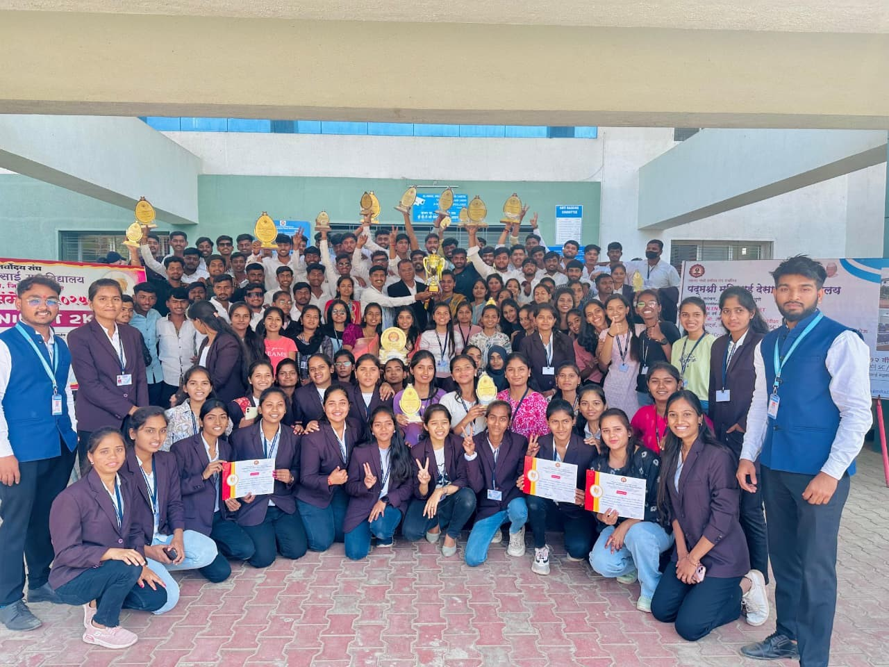
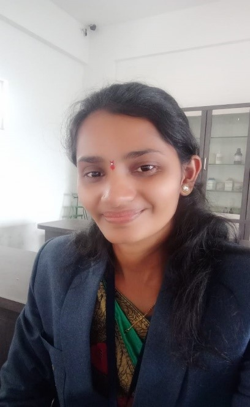
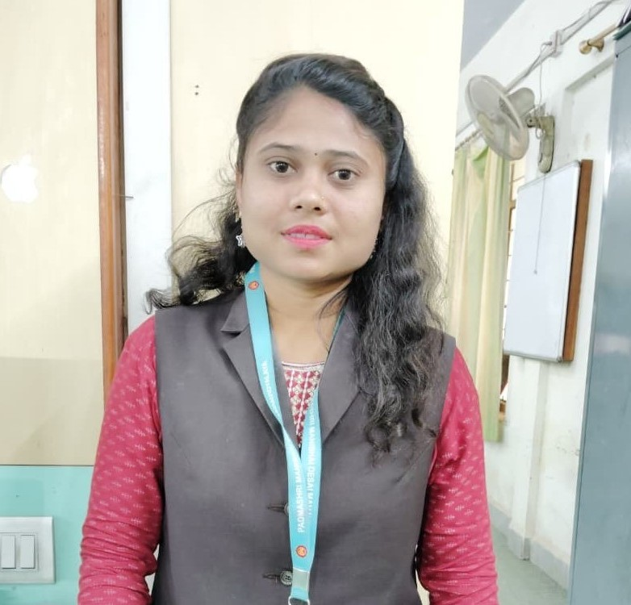
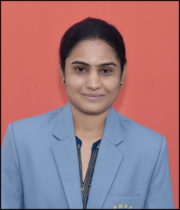
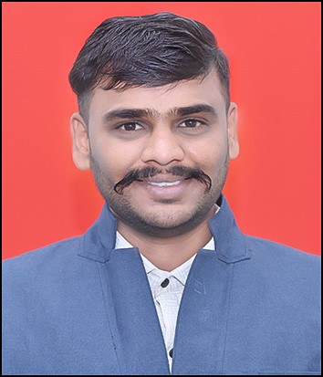
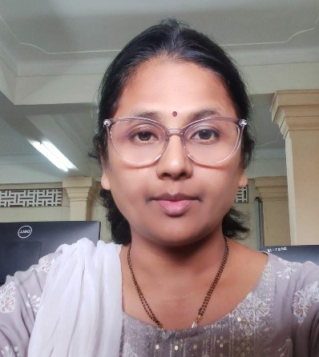
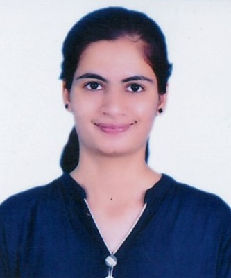
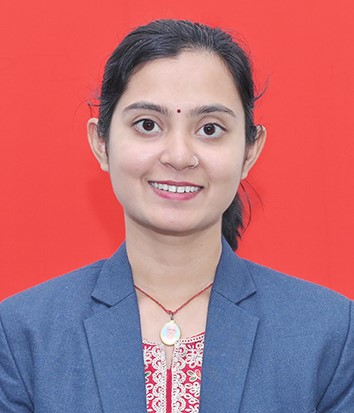
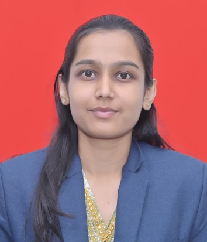
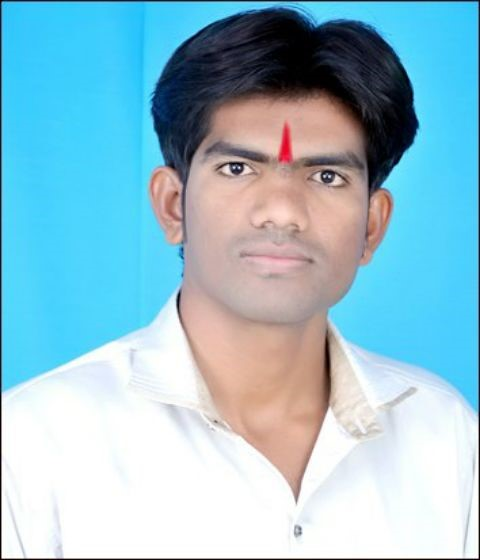

Preserving language — promoting literature — empowering rural youth

Overview
Department of Marathi has been established with the vision of conservation of Indian culture,
literature, and regional language, as well as promotion of the mother language in all sectors of human life.
It offers graduate programme B.A. Marathi since 2002, and M.A. Marathi since 2021.
The department aims to promote Marathi language & culture and study its history.
There are 2 faculty members. The future complex will have a library, seminar rooms, and research cubicles.
The department has a valuable collection of manuscripts and is actively collecting more.
Objectives
teach students how to use computers effectively, creatively, and intelligently.
teach computer science as a multifaceted, humanistic discipline of problem solving.
provide up-to-date curricula in the technical and scientific knowledge needed for the professional and academic goals of our students.
teach students how to acquire new knowledge, independently, in a world that changes rapidly.
provide students with experiential learning opportunities.
educate an increasing number of undergraduates in computer science to meet the growing demands of the regional and national economy.
VISION
To create a conducive environment for skill-oriented education of high quality in the field of Computer Science and Information Technology.
To develop the students' abilities to be able to compete in global technological society.
MISSION
To share the knowledge in Computer Science and in interdisciplinary areas to benefit the students; to develop the students from rural area so that they can make careers in Information Technology; to educate students to be successful, ethical, and effective problem-solvers and life-long learners who will contribute positively to the economic well-being of our region and nation; prepare the students to tackle complex 21st Century challenges.
Student Achievements
Awards, news
Participation
Students regularly participate and win accolades in coding competitions, paper presentations, business quizzes, and startup hackathons.
Participation in social outreach programs and NSS activities reflects our commitment to holistic development.
Best Practices
• Class Guardian and Mentor-Mentee System: A structured mentoring program to ensure personalized academic and emotional support to each student.
• Remedial and Bridge Courses: Special sessions conducted for academically weaker students and non-IT background learners to strengthen foundational knowledge.
• Skill Enhancement Courses: Add-on and certification courses in trending technologies such as Python, AI, Data Analytics, Cloud Computing, and Cybersecurity.
• Industry Collaboration:Strategic MoUs with IT companies and training institutes to facilitate student internships, live projects, and placements.
• Guest Lectures and Industry Talks:Regular sessions conducted by industry professionals to keep students updated with the latest trends and practices.
Teaching Pedagogy
Our department adopts a variety of innovative teaching methodologies to enhance student engagement and academic performance:
Interactive Lectures & Group Discussions
Flipped Classroom Approach using YouTube and Google Classroom
Computer-Assisted Learning with hands-on software tools
Field Visits & Industrial Exposure for real-world learning
Assignments, Mini Projects, and Presentations to improve practical skills
Expert Guidance & Aptitude Training for competitive readiness
Online Assessments and ICT-based Teaching using Google Meet, PPTs, and Learning Management Systems (LMS)
ICT Integration in Teaching
The department is equipped with a modern computer lab, high-speed internet, LCD projectors, and ICT tools to support blended learning. Faculty members use:
Google Classroom for assignment sharing and communication
Video lectures for complex topic explanations
WhatsApp groups for real-time student interaction and updates
PPTs, e-notes, and quizzes for continuous engagement
Laboratory & Practical Work
Dedicated practical sessions are an integral part of the BBA(CA) curriculum.
Each session includes detailed explanations, demonstrations, and supervised hands-on practice.
Additional lab hours are provided for students requiring extra support in programming and software tools.
Real-time projects and coding challenges help enhance problem-solving abilities.
Assessment & Evaluation
Examinations are conducted as per the university guidelines.
Internal evaluations include two prelim exams, assignments, viva, and practical tests.
Continuous assessments ensure regular academic tracking and timely intervention.
Final year students undertake Industrial Training Projects to gain real-world exposure.
Co-Curricular and Extra-Curricular Activities
The department organizes various academic and personality development events throughout the year:
Student Induction Program
Poster and Essay Competitions
Technical Workshops and Hands-on Training
Awareness Campaigns on Cybersecurity and Digital Literacy
Meditation, Yoga & Wellness Programs
Guest Lectures on Industry Trends
Workshops on Resume Building, Soft Skills & Interview Techniques
Experiential Learning Initiatives
Industrial Visits to software companies, tech hubs, and startups.
Business Fairs to develop entrepreneurial thinking and marketing strategies.
Simulation Activities and role-playing exercises to instill business and IT skills.
Live Projects guided by industry experts and faculty mentors.
Collaborative Learning & Industry Interface
To align academic knowledge with industry expectations, the department has entered into collaborations with reputed organizations:
MoUs with Tech Companies for training, internships, and placements.
Internship programs for third-year students to gain practical exposure.
Industrial mentorship programs to provide guidance on career paths and latest tools.
Guest sessions by professionals from software firms, startups, and business consultancies.
Training & Placement Support
Dedicated Training and Placement Cell coordinates pre-placement training, resume preparation, and mock interviews.
Tie-ups with recruitment agencies and software firms to ensure career opportunities for students.
Alumni mentoring for guidance in higher studies and job readiness.
Student Achievements & Participation
Students regularly participate and win accolades in coding competitions, paper presentations, business quizzes, and startup hackathons.
Participation in social outreach programs and NSS activities reflects our commitment to holistic development.
Research Paper Publication
Sr. No.
Name of faculty
Workshop/ Seminar/ Conference
Level (Internation/ National/ State)
Activity (Participation/ Paper Presentation)
Journal Name
Title of Paper
1
Prof. Adhav P. H.
Conference
International
Participation
International Journal of Scientific Research in Engineering and Management (IJSREM)
Comparative Study of Java and Python Languages with Reference to Data Science
2
Prof. Adhav P. H.
Conference
International
Presentation
International Research Journal of Modernization in Engineering Technology and Science (IRJMETS)
Evaluating the impact of compiler optimizations on program Performance: a comparative analysis of c, c++, and java
3
Prof. Bhosale H. V.
Conference
International
Participation
International Journal of Multifaceted and Multilingual Studies
Comparative Study of Cloud Platforms for Data Science: Evaluate AWS, Google Cloud and Azure
4
Prof. Choudhari V. M.
Conference
International
Participation
International Journal of Multifaceted and Multilingual Studies
evaluating data visualization tools - tablue,power BI and Excel
5
Prof. Shinde A. S.
Conference
International
Participation
International Journal of Multifaceted and Multilingual Studies
Artificial Intelligence and Machine Learning
6
Prof. Thorat P. B.
Conference
International
Participation
International Journal of Multifaceted and Multilingual Studies
Automated Air Pollution Detection and Control in Vehicles
Teaching Staff

Vaishali Mukinda Choudhari
Head of the Department (Computer Science)
M.Sc. Comp. Sci. | 10 Years
Bhosale Harshal Vijay
Assistant Professor
M.Sc. Comp. Sci. |1.5 Years

Anuja Shankar Shinde
Assistant Professor
M.Sc. Comp. Sci. |1.5 Years

Thorat Prajakta Balasaheb
Assistant Professor
Electronics and Telecommunication Engineering | 14 Years

Tilekar Gaurav Rajendra
Assistant Professor
MCA | 0.7 Years

Amruta Bapte
Assistant Professor
MCA | 14 Years

Nagawade Manali Shankar
Assistant Professor
MCA | 0.7 Years

Kumbhar Rutuja Pradip
Assistant Professor
MCA | 0.3 Years

Ketki Ashok Salunkhe
Assistant Professor
M.Sc. (Statistics) | 0.4 Years

Jagtap Bapu Uttareshwar
Lab Assistant
B.A.CCNA | 16 Years
×
{{ profile.name }}
Designation: {{ profile.designation }}
Qualification: {{ profile.qualification }}
Experience: {{ profile.experience }}
Expertise: {{ profile.expertise }}
Mobile: {{ profile.mobile }}
Email: {{ profile.email }}
Science Faculty — UG Courses — B.Sc. (Computer Science)